Hola Vanesa,
¿Qué tal estás? Bueno, como no sabía qué podía regalarte por tu cumpleaños, he decidido tirar un poco de la imaginación para intentar sorprenderte. Esto es la primera vez que lo hago en la vida. Lo de escribir una carta, digo. Escribir desde muy pequeño, se hace garabatos.
Ya hace diez años que nos conocemos, diez años que has estado en mi cabeza. Me acuerdo perfectamente del día en el que te conocí. Aquella mañana, una vez acabamos la reunión de los “Gatos Voladores”, no podía parar de pensar en ti. Era una sensación muy rara, pero gracias a esa sensación estamos juntos hoy en día.
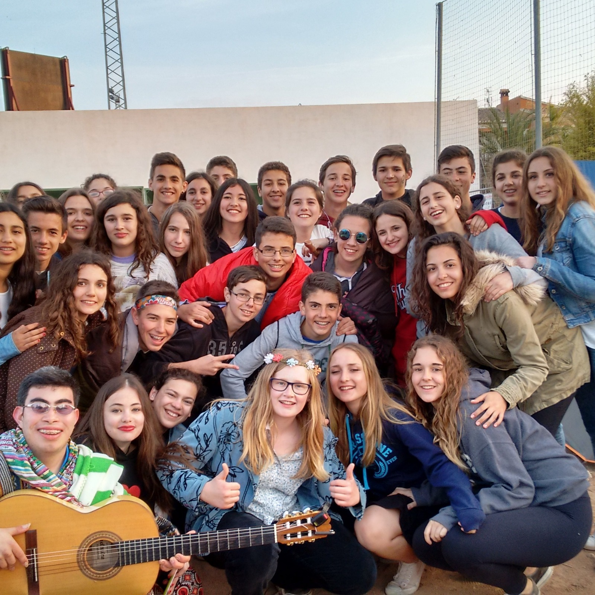
Eso hizo que me decidiera a saber quién eras, y me quedé en la rampa del campo de rugby de Jávea hasta que salieras. Al verte, sentí una sensación de nervios que nunca había sentido. Fueron 30 segundos en los que interactuamos, intercambiamos nuestros Instagram y luego nos despedimos. Yo estaba en una nube, feliz. Me pasé todo el autobús de vuelta a Benicàssim mirando tu Instagram como un bobo.
A raíz de eso, empezamos a hablar por WhatsApp, tanto por el grupo de los Gatos como por privado. Era la primera vez que le hablaba a una chica.
Ahí me dije: háblale, ¿qué más da?
De los primeros días no me acuerdo qué es lo que hablábamos, pero me acuerdo de un día que estuvimos toda la tarde, hablando por WhatsApp, y cuando nos despedimos para irnos a cenar, me enviaste un emoji de un besito 😘. Esa tontería hizo que me pusiera súper nervioso y feliz.
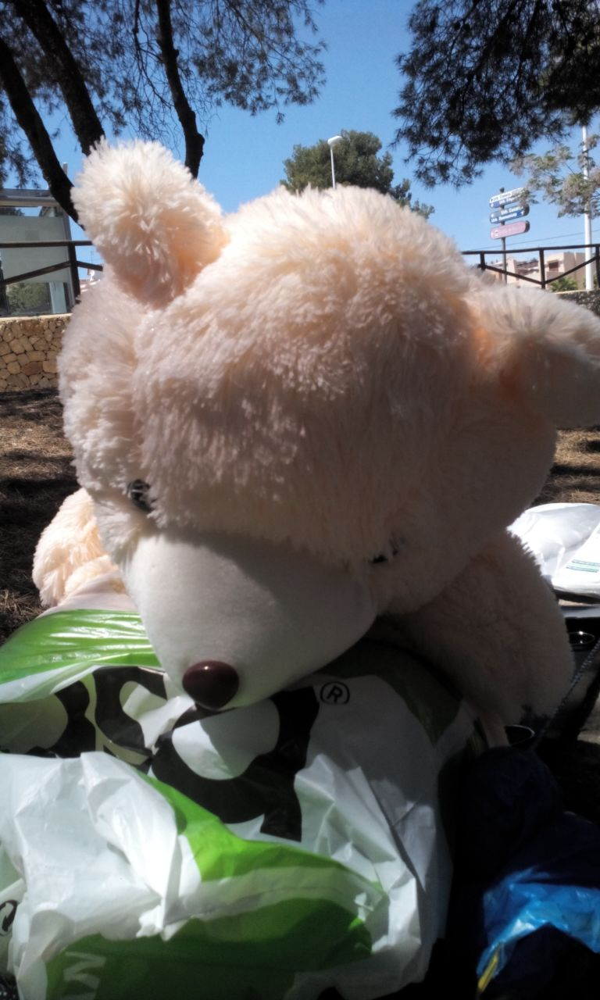
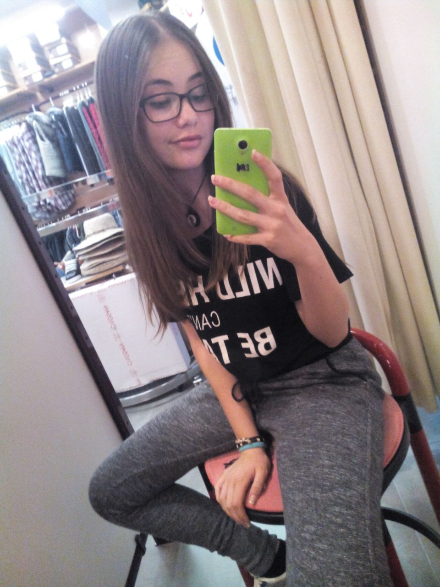
Esos primeros meses hablando sin parar, parecíamos novios, pero nos separaban muchos kilómetros. Yo me enamoré de ti. Eres mi primer amor, aunque fuera a distancia.
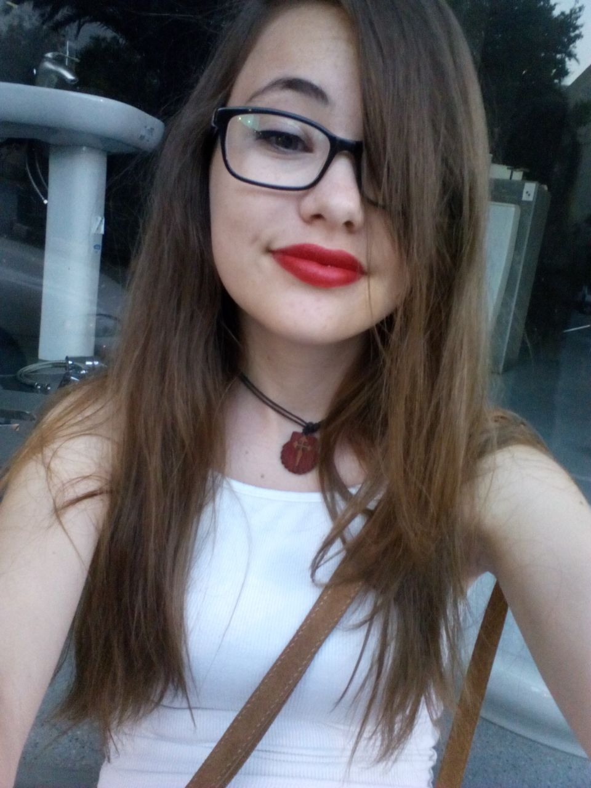
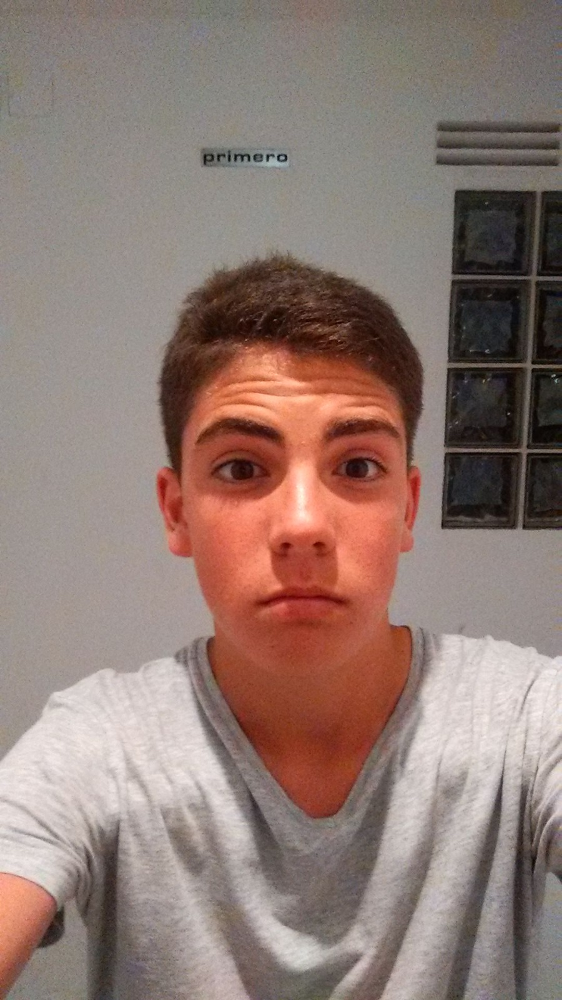
Hablábamos y hablábamos, pero poco a poco fuimos dejando de hablar. Durante ese tiempo, nunca saliste de mi cabeza.
Pasaron varios meses y se acercaba el Com Sona l’ESO. Esa noche yo estaba cenando en la pizzería Italia con mis amigos y subiste una foto a Instagram, en la cual dejé un comentario. A partir de ahí, retomamos las conversaciones hasta que, llegado Com Sona l’ESO, nos volvimos a ver.
Yo nunca me había liado con una chica, ni con un chico, pero sabía que posiblemente tú ibas a robarme mi primer beso.
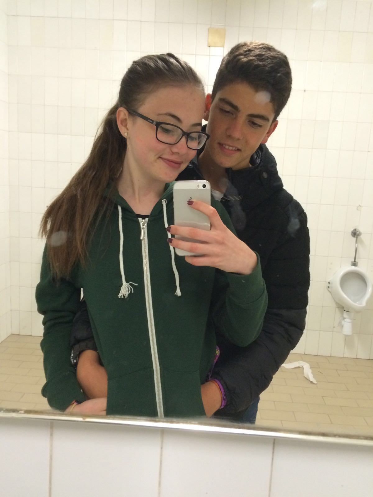
El primer día estuvimos toda la tarde cada uno a lo suyo, pero finalmente quedamos. Estuvimos en tu tienda de campaña un buen rato hablando. Yo no tenía valor para lanzarme, estaba muy nervioso, pero cuando nos fuimos a mi tienda, me lancé: mi primer beso.
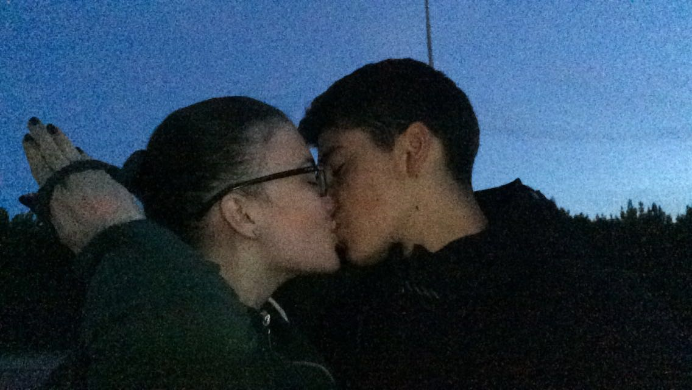
Esos tres días que duró el Com Sona l’ESO, estaba súper feliz. Estaba con la chica que quería. No solo era atracción física lo que sentía, era mucho más. La última noche estuvimos toda la noche por el camping. No quería que se acabara. Después de eso, seguimos hablando... como llevábamos haciendo mucho tiempo. Con nuestras bromas de los niños, hablando de que queríamos ser mayores. Yo me acuerdo de que te dije que quería ser piloto. Hemos visto que no. Y la verdad, no me acuerdo de que más hablábamos. Éramos unos niños.
Los siguientes años hablábamos de forma esporádica, hasta que, de casualidad, en Fallas del año 2019, yo iba con mi primo Nacho por la zona de Cánovas y me pareció verte.
No podía ser. —¿Es Vanesa? —me pregunté. Tenía que comprobarlo y, efectivamente, eras tú.
Estuvimos un buen rato hablando, pero nuestros amigos nos esperaban. Fue una sensación increíble. Volví a sentir esos nervios. Esos nervios que solo me ha conseguido sacar una persona en este mundo: tú.
Luego, esa misma noche, nos volvimos a cruzar, y ahí supe que a ti también te hizo ilusión verme. Cómo no, empezamos a hablar de nuevo, pero esta vez ya hablábamos para vernos. Tampoco me lo pensé mucho, y a los dos días volví a Valencia solo para verte.
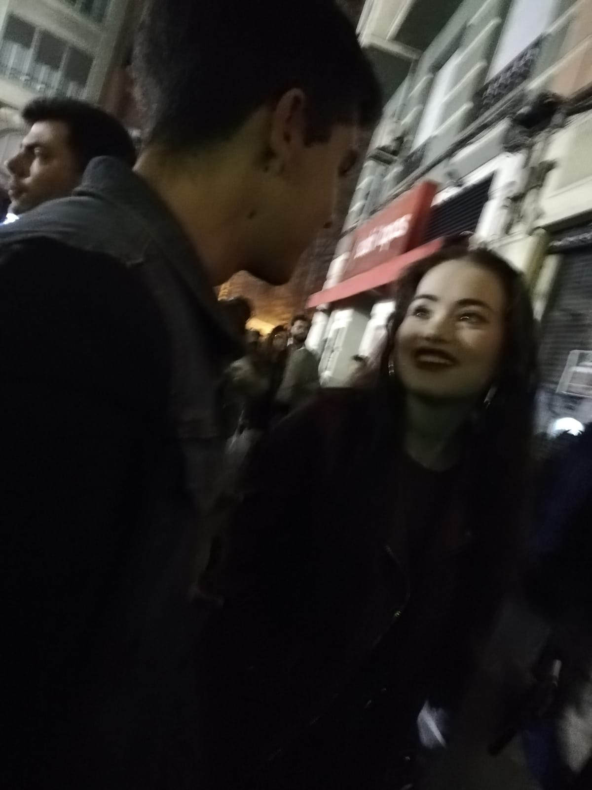
Los siguientes meses hablábamos muchísimo, pero estábamos en una edad en la que yo solo pensaba en salir de fiesta. Viniste a Benicàssim a verme. Increíble. Yo no tuve el valor de ir a verte a Valencia. Y por cosas así, después de vernos la noche de Akuarela, poco a poco nos separamos y dejamos de hablar.
Perdí el tren, y eso es algo de lo que no me he olvidado a día de hoy. Dejé pasar a la mujer de mi vida. Algún día te respondí a alguna historia, pero ya no nos volvimos a conectar. Te había perdido.
Durante los años siguientes no supe mucho de ti. Pero eso no hizo que yo me olvidara de ti.
Durante todos esos años, nunca volví a sentir esos nervios extraños que se sienten al ver a esa persona especial. Será que esa sensación solo hay una persona que la pueda causar en mí.
En 2022 me mudé a Valencia y, sin pensarlo dos veces, te hablé. Recuerda que nunca has llegado a salir de mi cabeza. Hablando contigo, me dabas largas, y una noche te propuse tomar un café. Eso no iba a salir bien. Al ver que no querías verme, seguí con mi vida.
Llegamos al año pasado. Una noche de Magdalena, a altas horas y con unas copitas de más, te escribí. Y noté que podía tener alguna posibilidad de subirme al tren.
Justamente unos meses antes, en una conversación con mi primo Jacob, hablábamos de que éramos jóvenes y que, mientras no nos casemos, teníamos que pasarlo bien. Y a eso mismo yo le contesté que yo me casaría con Vanesa. Que no hablábamos desde hace años, pero yo sabía que me casaría con Vanesa.
Empezamos a hablar de nuevo, y poco a poco me iba ilusionando más y más, hasta que un día por la tarde, yo iba en Valenbisi hacia la plaza de Honduras. Yo sabía que vivías por la zona, e intencionadamente aparqué la bicicleta en la parada del Burger, por si acaso te veía. Ya llevábamos cinco años sin vernos, y esa proyección mía dio sus frutos.
Al otro lado de la acera me pareció reconocer a tu hermana, por lo que la chica al lado debía de ser tú. A medida que íbamos cruzando por el paso de cebra de Blasco, te reconocí. Volví a sentir esos nervios que solo tú has conseguido que tenga. Nos volvimos a ver cinco años más tarde, pero solo fueron unos segundos, por lo que quedamos para tomar algo y ponernos al día.
Al principio, durante el paseo, te veía como algo inalcanzable. Pero luego, una vez empezamos a hablar más y más, noté una conexión contigo, esa conexión que tuvimos cuando éramos pequeños.
Al acabar de tomar unas cervezas en el Mercado de Colón, nos fuimos paseando hacia tu casa. Y tú me acercaste en coche a la mía. A la hora de despedirnos, yo sólo pensaba en besarte, pero no quería cagarla. Así que me contuve. Pero sentí que ahí podía empezar el mejor capítulo de mi vida.
El día 1 de mayo, hace justo un año y dos días, quedamos para ver el Faro de Cullera. Precioso, por cierto. Ese mismo día me dije a mí mismo que esta vez no iba a perder el tren. Cuando acabamos la cena, te di tu regalo de cumpleaños: un llavero que no significaba nada, pero lo significaba todo.
Un año más tarde, aquí estamos, sumando momentos juntos.
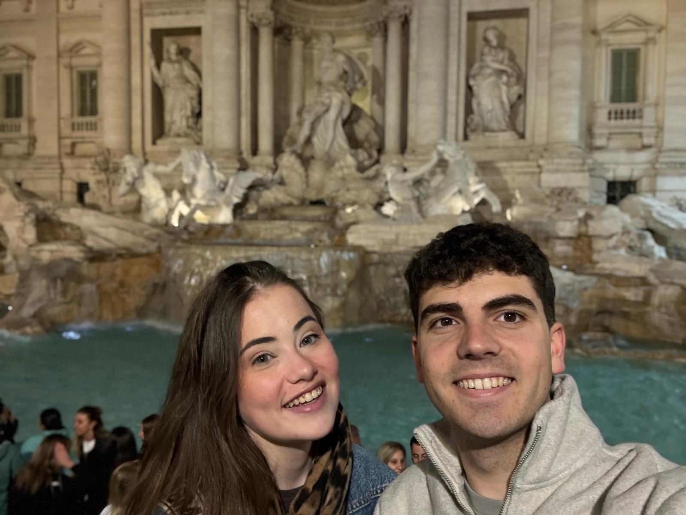
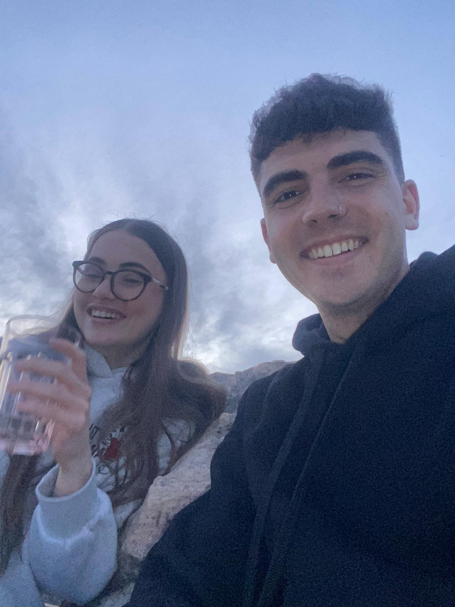
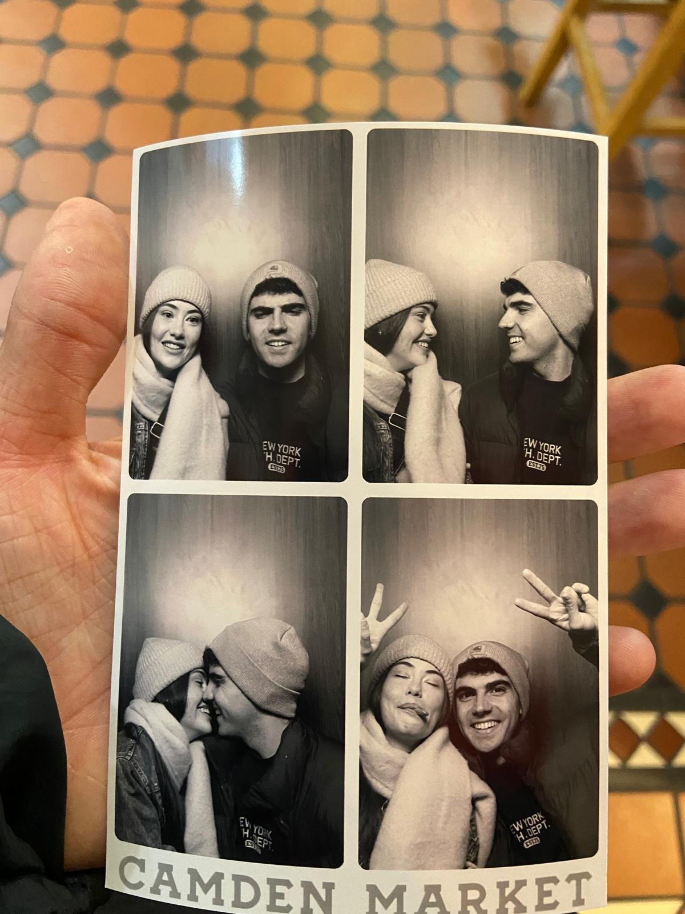
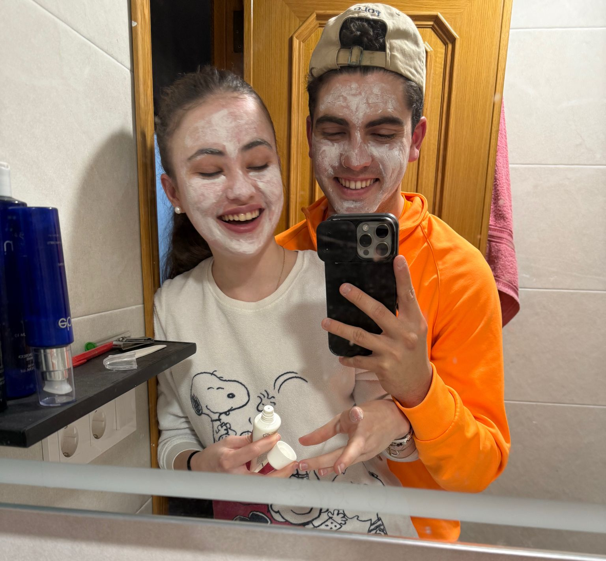
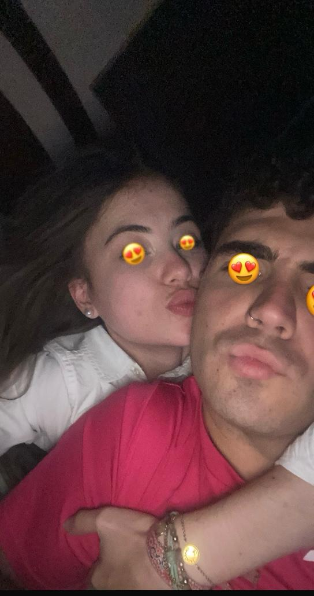
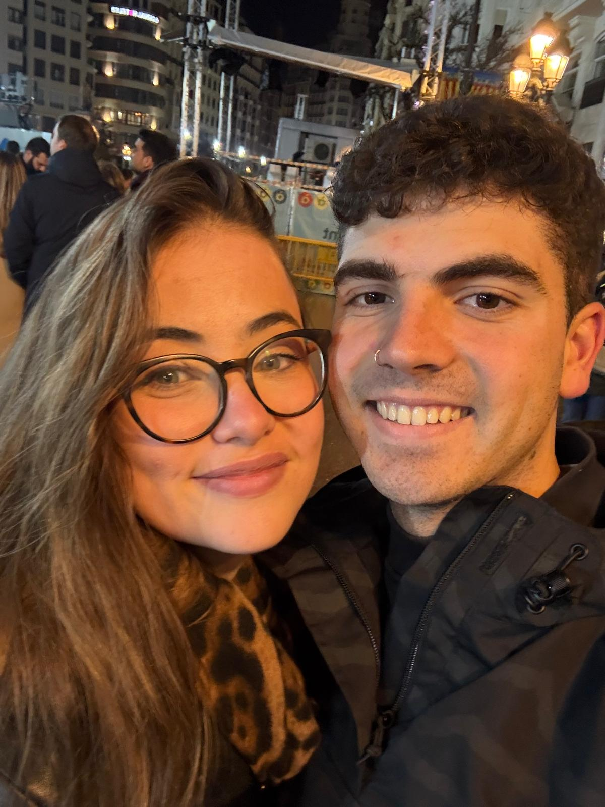
Me gustaría que supieras —aunque ya lo sabes— que eres la mujer de mi vida, que te amo. Sacas mi mejor versión. Y que yo ya decidí, hace un año, que quiero pasar el resto de mi vida contigo.
Y para seguir sumando momentos juntos, he querido regalarte una experiencia que esté a la altura de todo lo que significas para mí. Sé que los balnearios te encantan, así que he pensado que no hay mejor forma de celebrarnos que escaparnos juntos a uno. Un lugar donde podamos desconectar del mundo, relajarnos, reírnos sin prisa y, simplemente, disfrutar de estar el uno con el otro. Pasar una noche contigo, en calma, sin relojes ni distracciones, solo nosotros, como tantas veces imaginamos de pequeños. Porque este es solo uno más de todos los momentos que quiero vivir contigo. Porque lo tengo claro desde hace un año: quiero seguir sumando días, experiencias, historias… Y sobre todo, quiero seguir sumando vida contigo.
Con todo mi amor,
Gonzalo